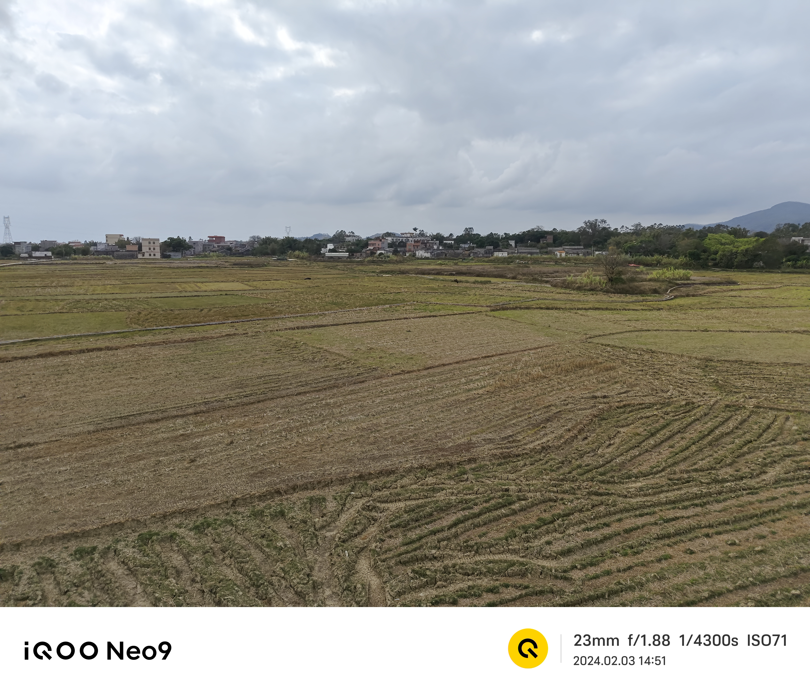
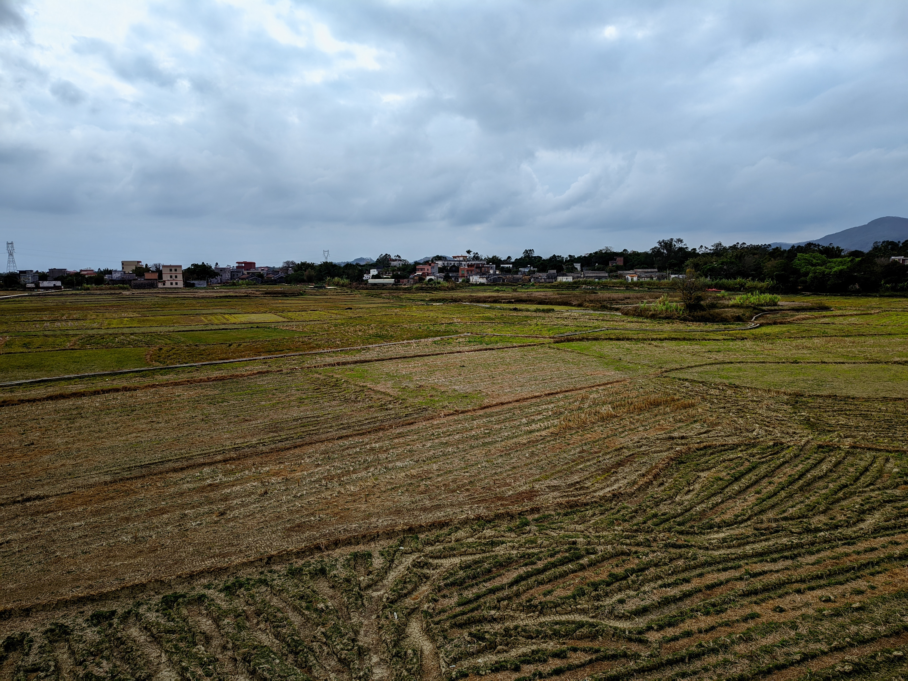
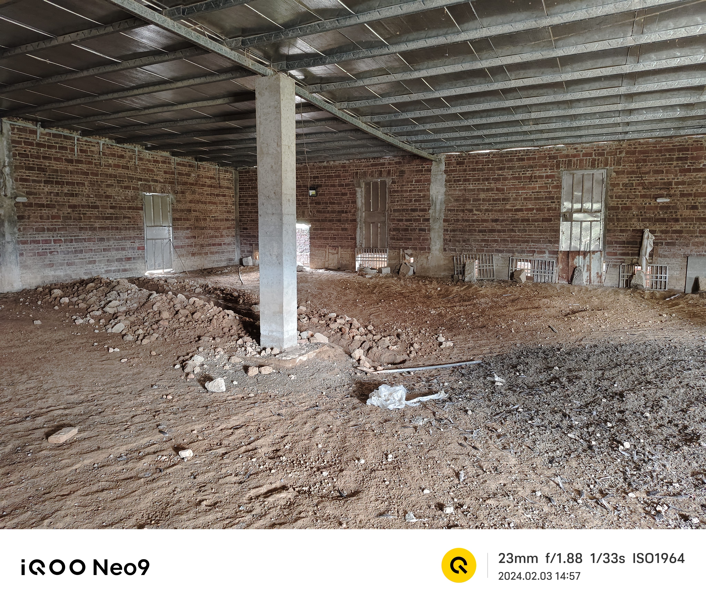
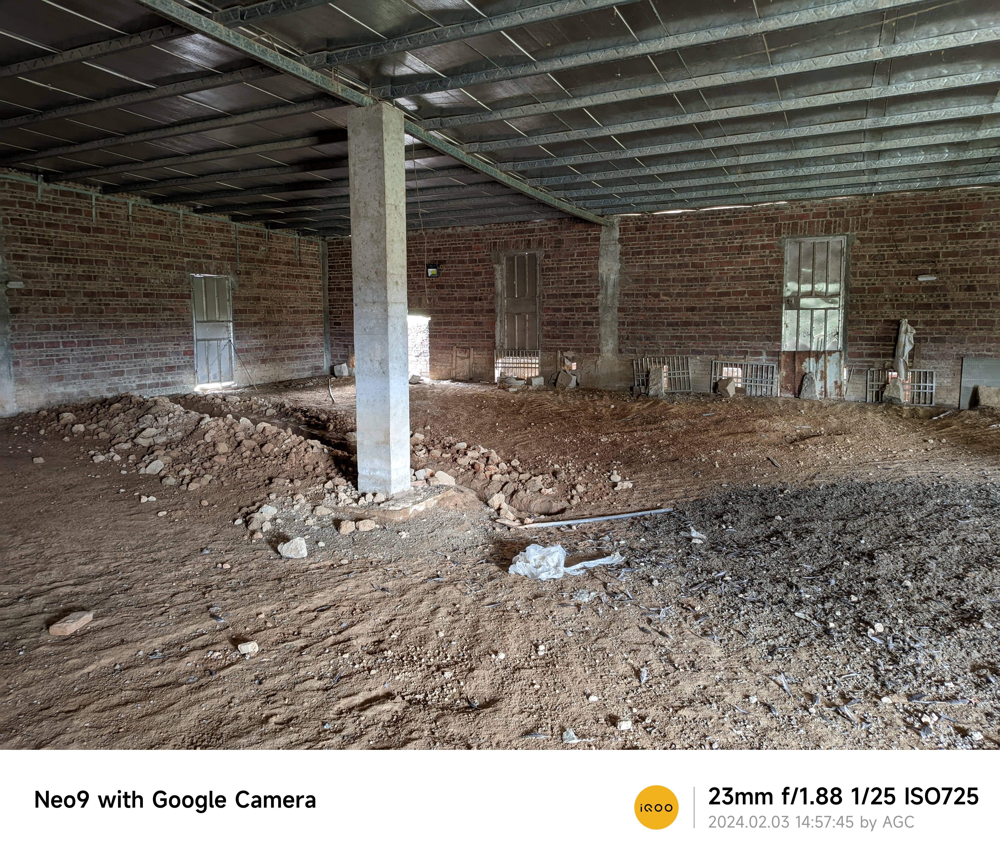
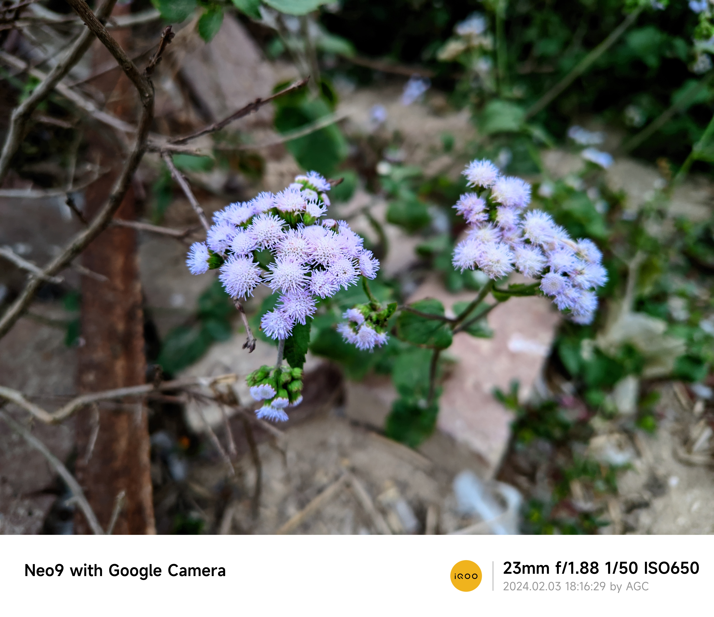
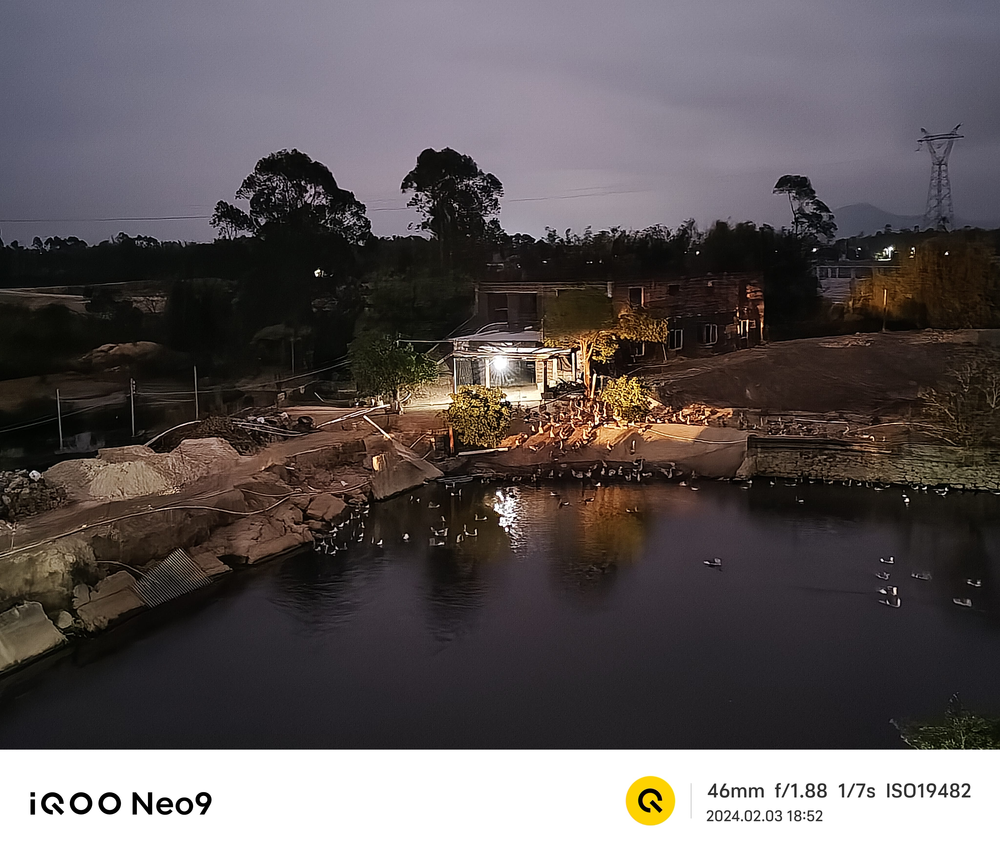
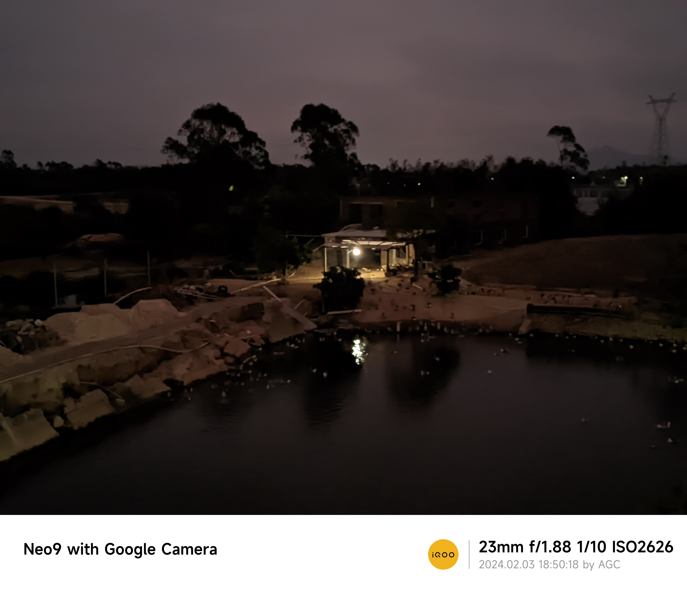
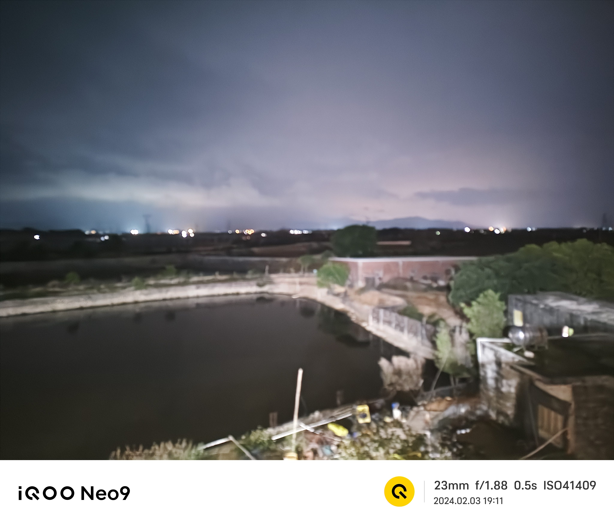
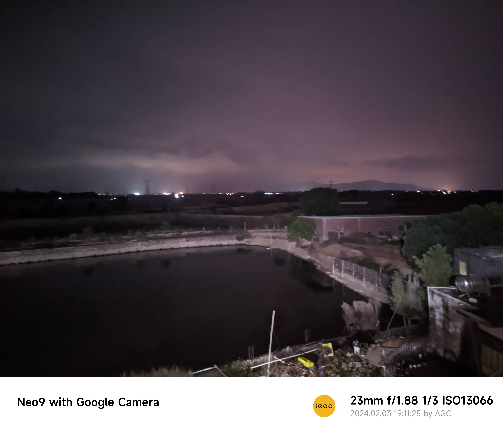

相机算法对比
终于把旧手圾换掉了
是IQOO Neo9
既然整了个大的，不如看看相机怎么样
受伤没有可对比的，就看算法吧
一上手就装了个谷歌相机（酷安日文大佬的）
看看vivo的算法好还是谷歌的算法好
下面的图片都是普通/标准模式/徕卡鲜艳、夜景/夜视仪/夜景压光模式拍摄的
趁着一个外出的机会拍一拍（一年也没去过几次）
| 场景 | 原生相机 | 点评 | 谷歌相机 | 点评 | 总结 |
|---|---|---|---|---|---|
| 光照充足的田野 |  |
颜色比较淡 |  |
颜色鲜艳，很浓，主观上挺喜欢的 | 谷歌相机好，明显更鲜艳 |
| 光照较少 |  |
整个画面都亮了，石头清晰，细节较多 |  |
这个光影的效果不错 | 主观上谷歌相机 |
| 近距离拍几朵花 |  |
颜色中规中矩，但是虚化不错 |  |
颜色鲜艳，细节少，还有点糊 | 偏要说谁好的话，就原生的吧 |
| 很黑的夜晚（肉眼几乎看不到什么东西）+一盏白炽灯 |  |
后面的树是黑的，前面的东西还有点颜色。这灯泡跟画上去的太阳一样，感觉有点假。整体很亮 |  |
细节少， 更加黑，糊。灯泡的亮度倒是压下去了，但总体相对来说不行 | 原生完胜 |
| 很黑的夜晚（肉眼几乎看不到什么东西） |  |
更模糊，更亮（惊人的4万ISO） |  |
很模糊，但是天空的颜色和这种氛围感我挺喜欢的 | 谷歌相机更好吧 |
谷歌相机3：2原生相机
很难说谁好
更多看主观